Photo credits
Where the pictures come from.
Every picture on this site was generated for this demo. None of them shows Eavesdale's work, because Eavesdale does not exist, and none of them is a photograph of a real house, a real job or a real person.
| What it shows | Where it came from | Used for | |
|---|---|---|---|
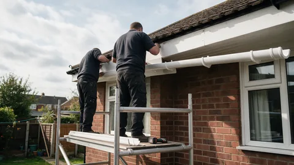 | Two installers fitting a run of white fascia board at the eaves, used on the home page and the work page | Generated for this demo | Illustrative only |
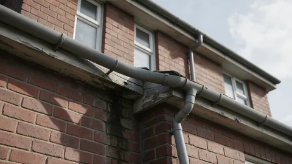 | The 'before' half of the slider: a sagging gutter, rotten fascia and a stained wall | Generated for this demo | Illustrative only |
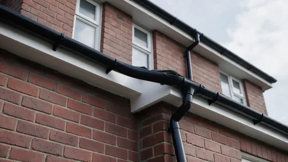 | The 'after' half of the slider, generated from the 'before' picture so it is the same house | Generated for this demo | Illustrative only |
 | A full uPVC roofline finished all round including the gable, used on the roofline page | Generated for this demo | Illustrative only |
 | A finished run of new fascia and soffit with a black gutter hung level, used on the fascias page | Generated for this demo | Illustrative only |
 | The underside of a new soffit with its ventilation strip, used on the fascias article | Generated for this demo | Illustrative only |
 | A rotten painted timber fascia with the paint blistering off, used on the repair or replace article | Generated for this demo | Illustrative only |
 | A gable faced in shiplap cladding with a new bargeboard, used on the cladding page | Generated for this demo | Illustrative only |
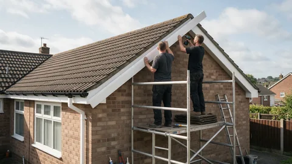 | A bargeboard being fitted up a gable verge from a scaffold, used on the work page | Generated for this demo | Illustrative only |
 | Leaves and silt being lifted out of a gutter into a bucket, used on the gutter cleaning page | Generated for this demo | Illustrative only |
 | A gutter overflowing in heavy rain, used on the urgent help page and the overflow article | Generated for this demo | Illustrative only |
 | A leaking joint between two lengths of gutter, used on the gutter repairs page | Generated for this demo | Illustrative only |
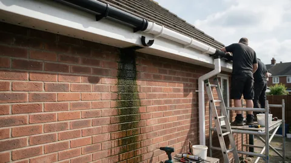 | An algae stain down brickwork under one gutter joint, used on the work page | Generated for this demo | Illustrative only |
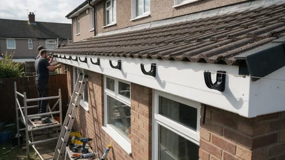 | Gutter brackets set out along a new fascia to a string line, used on the gutter repairs page | Generated for this demo | Illustrative only |
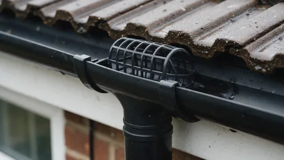 | A running outlet with a leaf guard cage in it, used on the downpipes page | Generated for this demo | Illustrative only |
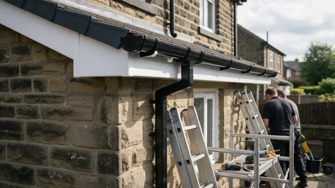 | A cast iron effect ogee gutter on an older stone house, used on the gutter cleaning page | Generated for this demo | Illustrative only |
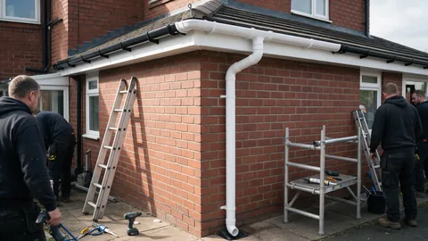 | A new downpipe with a swan neck and clips in the mortar, used on the downpipes page | Generated for this demo | Illustrative only |
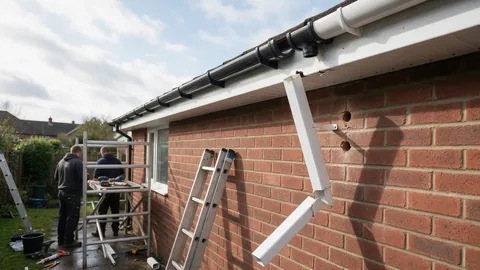 | A downpipe hanging loose off a wall with a clip pulled out, used on the work page | Generated for this demo | Illustrative only |
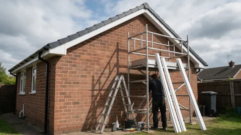 | A scaffold tower set up at the eaves with boards leaning against it, used on the cladding page | Generated for this demo | Illustrative only |
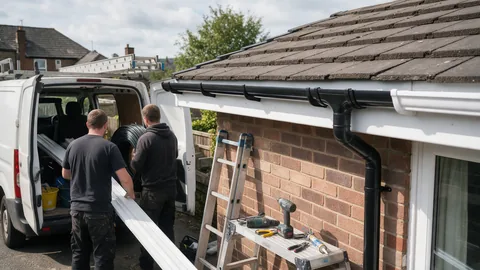 | Two installers loading board and gutter into a plain van, used on the about page | Generated for this demo | Illustrative only |
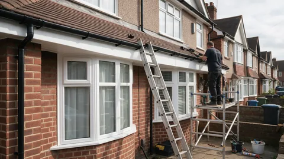 | A street of nineteen thirties semis with their eaves line visible, used on the home and area pages | Generated for this demo | Illustrative only |
The rest of it
Everything else on the page is drawn in the browser: the brand mark, the icons, the four gutter profiles on the home page, the run of gutter under each heading, the diagrams of what a roofline is made of and why a gutter overflows, and the five step rail showing where the rain actually goes. No stock photography, no clip art and no third party images.
Nobody in any picture is identifiable, and no van, bag, tool or workwear carries a real name or logo. Every file is a WebP under 200 KB.
The before and after
The pair on the home page is the same house twice. The 'after' picture was generated from the 'before' one, so the brickwork, the window head and the tile edge all match. It is there to show the thing worth looking at on a tired eaves, which is the stain under one spot rather than along the whole run.
The words
All the copy on this site was written for this demo. The firm, the people, the jobs and the reviews are invented. Anything factual, like why a soffit carries ventilation or why silt off tiles blocks a gutter at the outlet, is general trade knowledge rather than advice on your property. There are no prices, no guarantees, no schemes and no response times anywhere on it, on purpose.
The numbers
The firm's number, 01632 960608, comes from the range Ofcom keeps for television and film, so it rings nobody. The email address ends in .example, which cannot receive anything. The only real number anywhere on this site is Clockwork's own, 07460 038202, in the bar at the top and the note at the bottom, and it is labelled as Clockwork's rather than the firm's.
Want one like this for a real firm?
Ring Clockwork on the number in the bar at the top of the page. This demo is here to show what gets built, not to sell you a gutter clean.